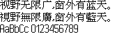

字样资料 / Siemens Xelibri 2/4
Siemens Xelibri 2/4 · 14×14
本层9,509个显式Unicode映射、9,506个非空字形，含9,247个非空Han。GB2312汉字6,763/6,763齐全，基本Big5唯一汉字6,703/13,061，不能称完整繁体。95个可打印ASCII同层齐全，空格为空、94个可见。固定简繁样句均有字形，但不代表全繁体或全部符号覆盖。 · 14×14 · 简体、繁体
放大观察 · 3×

原尺寸 · 1×
来源与字样信息
- 家族
- Siemens Xelibri 2/4
- 排版说明
- 完整14高原矩形顶部对齐，汉字原框和最大墨迹均14×14。字间1px依原普通width+1推进路径，4px行间隔仅为样图布局。原度量byte保留，不推为所有UI通用bearing或基线。全角逗号依原查字别名使用同层窄ASCII逗号，不放大、不借字；该别名不扩充显式覆盖。原1×黑白PNG逐字节保留，不裁框、不补画、不冒充设备默认混层UI。
- 字符框
- 14×14 px
- 字面／墨迹
- 14×14 px
- 字符范围
- 简体、繁体
- 样本文字
- 视野无限广，窗外有蓝天。 視野無限廣，窗外有藍天。
- 拉丁样文
- AaBbCc 0123456789
- 覆盖说明
- 本层9,509个显式Unicode映射、9,506个非空字形，含9,247个非空Han。GB2312汉字6,763/6,763齐全，基本Big5唯一汉字6,703/13,061，不能称完整繁体。95个可打印ASCII同层齐全，空格为空、94个可见。固定简繁样句均有字形，但不代表全繁体或全部符号覆盖。
- 缺字
- 样文无缺字
- 样张类型
- SW511固件font 4原生14×14汉字及同层不等宽ASCII；繁体覆盖不完整。
- 风格
- 未分类
- 用途
- 设备界面
- 字形来源
- 来自Xelibri 2 and 4保存包内唯一SW511 CLA；128个常规成员均已静态核验。原包手册直接注明XELIBRI 2 and 4，固件含10/10/2003及对应software ID，日期仅为构建关联字串，不认定字体创作或首次发行年。按原Unicode映射与压缩1-bit字模静态解码，不取模轮廓、不执行固件；只枚举此CLA的10个字体表，不称整个设备资源已穷尽。
- 授权状态
- 未确认开放再分发授权
- 许可说明
- 第三方保存、散列一致及原包手册不等于厂商认证或再分发许可。仅展示固定小样图、必要来源与聚合事实及无字模重绘方法，不公开原包、固件、完整字体、字模数组或字库子集。使用与再分发受原权利约束。
- 说明
- 固定249条参考记录的全部共同非空Han做外围空白裁切精确比较及无尺寸门槛±1px完整墨迹Dice比较，不缩放。最高大交集国乔KC15为61/6,703精确、平均0.788190；MS Song14为1/6,763、平均0.735270。未见近整层重复，不证明独创或复制方向。冻结快照仅覆盖SC13发布前199/244个目录ID、45缺口保留，另含SC13及MS14直接参考，不称当前目录全覆盖。同源11×12层与Casio12为9,241/9,247精确，不新增。
- 获取方式
自行取得有权处理且SHA匹配的本地SW511 CLA；工具仅离线重绘批准的固定三行PNG，不联网、不执行固件，不导出任意文字、完整字体或字库子集。
- 来源
- Internet Archive第三方Xelibri 2/4固件保存页
- 原生证据
说明：10层全部20,216个显式映射的地址、宽高、原度量byte、消耗bit数及像素由两条静态实现逐项交叉核验；固定41个显示字符直接由独立解码重建，1×及4×逐像素一致。比较输入身份已独立核验，KC15全部6,703共同字分数独立复算；非249条分数均二次复算。
source_sha256：3d8047d15f91249e6ec8f2d5f97338b7f8368445e04c32d16476134a48c3afa0
sourceBytes：3145732
containerSha256：032ef41aea72f348c5bf233082e92a0a335d357368157cb32c9076534470b329
containerBytes：4253674
firmwareVersion：SW511 / 0x0207000511040000
fontTable：4
mappedCharacters：9509
nonblankCharacters：9506
nonblankCjk：9247
gb2312Han：6763
big5Han：6703
big5ExpectedHan：13061
printableAscii：95
nonblankAscii：94
bitDepth：1
hanRawMetricByte：14
ordinaryAdvanceRule：native width + 1; not a universal UI metrics claim
查看原生设计来源
字体使用与再分发按原来源许可执行。